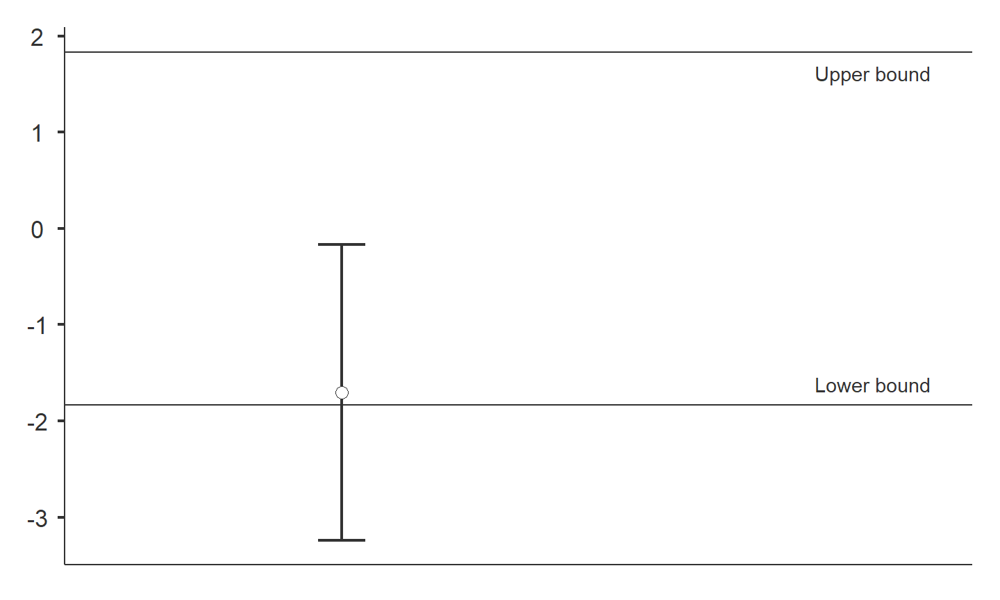
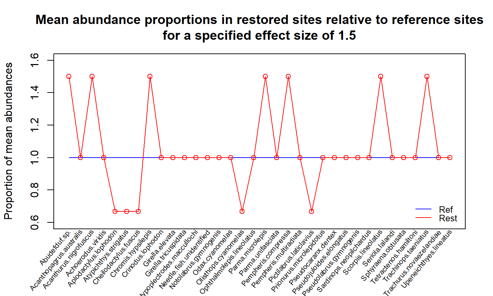

- Commonly used in pharmaceutical development (Berger and Hsu 1996)
Equivalence testing
Inception
Classical hypothesis testing
\(H_0: d = 0\)
\(H_a: d > 0\)
Classical hypothesis testing
\(H_0: d = 0\)
\(H_a: d > 0\)
Equivalence testing
\(H_0: d \le -0.05 \text{ or } d \ge 0.05\)
\(H_a: -0.05 < d < 0.05\)
Equivalence testing
A: Equivalent and not significant (effect is equivalent)
Equivalence testing
A: Equivalent and not significant (effect is equivalent)
B: Equivalent and significant (effect is equivalent)
Equivalence testing
A: Equivalent and not significant (effect is equivalent)
B: Equivalent and significant (effect is equivalent)
C: Not equivalent and not significant (effect is inconclusive)
Equivalence testing
A: Equivalent and not significant (effect is equivalent)
B: Equivalent and significant (effect is equivalent)
C: Not equivalent and not significant (effect is inconclusive)
D: Not equivalent and significant (effect is inferior)
Equivalence testing
A: Equivalent and not significant (effect is equivalent)
B: Equivalent and significant (effect is equivalent)
C: Not equivalent and not significant (effect is non-inferior)
D: Not equivalent and significant (effect is superior)
How to set the bounds?
- What is your effect size of interest?
- Cohen’s small-medium-large effect thresholds
- Small effect = 0.2
- Medium effect = 0.5
- Large effect = 0.8
Always pre-specify!
Ecological restoration
- Restoration can be considered successful if there is evidence of similarity between the restored and reference sites
Operation Crayweed
The problem
Stormwater drain
Ocean floor without crayweed

Operation Crayweed
The solution
Reference site
Restored site
Locations
TOSTER
Install packages
install.packages(c('TOSTER', 'ecoCopula', 'mvabund', 'devtools'))
devtools::install_github('lsjmichelle/ecopower@2b3d7fe')
Load package
library(TOSTER)
Species richness data
data('crayweed', package='ecopower')
abund = crayweed$abund
X = crayweed$X
data = data.frame(richness = rowSums(abund>0))
data$treatment = X$treatment
data$treatment = factor(data$treatment, levels=c('restored', 'reference'))
head(data)
## richness treatment ## 1 7 reference ## 2 5 restored ## 3 9 restored ## 4 13 reference ## 5 9 reference ## 6 11 restored
TOSTER
Specifying the effect - Cohen’s d
TOSTER
Testing for equivalence
dataTOSTtwo( data, deps='richness', group='treatment', low_eqbound=-0.8, high_eqbound=0.8, var_equal=TRUE, desc=TRUE, plots=TRUE )
## ## TOST INDEPENDENT SAMPLES T-TEST ## ## TOST Results ## ---------------------------------------------------------------- ## t df p ## ---------------------------------------------------------------- ## richness t-test -1.433731 25.00000 0.1640388 ## TOST Upper -3.476242 25.00000 0.0009369 ## TOST Lower 0.6087802 25.00000 0.2740813 ## ---------------------------------------------------------------- ## ## ## Equivalence Bounds ## ------------------------------------------------------------------------------ ## Low High Lower Upper ## ------------------------------------------------------------------------------ ## richness Cohen's d -0.8000000 0.8000000 ## Raw -1.465085 1.465085 -2.253651 0.1968330 ## ------------------------------------------------------------------------------ ## ## ## Descriptives ## -------------------------------------------------------------------- ## N Mean Median SD SE ## -------------------------------------------------------------------- ## restored 11 8.909091 10.00000 2.022600 0.6098367 ## reference 16 9.937500 9.500000 1.691892 0.4229731 ## --------------------------------------------------------------------

TOSTER
Too few samples?
powerTOSTtwo(alpha=0.05, N=14, low_eqbound_d=-0.8, high_eqbound_d=0.8)
## The statistical power is 36.31 % for equivalence bounds of -0.8 and 0.8 .
## [1] 0.3630618
powerTOSTtwo(alpha=0.05, statistical_power=0.8, low_eqbound_d=-0.8, high_eqbound_d=0.8)
## The required sample size to achieve 80 % power with equivalence bounds of -0.8 and 0.8 is 27 per group, or 54 in total.
## [1] 26.76202
TOSTER
Testing for non-inferiority
dataTOSTtwo( data, deps='richness', group='treatment', low_eqbound=-0.8, high_eqbound=Inf, var_equal=TRUE, desc=TRUE, plots=TRUE )
## ## TOST INDEPENDENT SAMPLES T-TEST ## ## TOST Results ## ----------------------------------------------------------------- ## t df p ## ----------------------------------------------------------------- ## richness t-test -1.433731 25.00000 0.1640388 ## TOST Upper -Inf 25.00000 < .0000001 ## TOST Lower 0.6087802 25.00000 0.2740813 ## ----------------------------------------------------------------- ## ## ## Equivalence Bounds ## ------------------------------------------------------------------------- ## Low High Lower Upper ## ------------------------------------------------------------------------- ## richness Cohen's d -0.8000000 Inf ## Raw -1.465085 Inf -2.253651 0.1968330 ## ------------------------------------------------------------------------- ## ## ## Descriptives ## -------------------------------------------------------------------- ## N Mean Median SD SE ## -------------------------------------------------------------------- ## restored 11 8.909091 10.00000 2.022600 0.6098367 ## reference 16 9.937500 9.500000 1.691892 0.4229731 ## --------------------------------------------------------------------
Multivariate equivalence testing
cbind(abund[1:6,2:4], head(X))
## Achoerodus.viridis Aplodactylus.lophodon Atypichthys.strigatus treatment time ## 1 1 1 29 reference 1 ## 2 0 0 57 restored 1 ## 3 0 0 55 restored 1 ## 4 0 5 112 reference 1 ## 5 1 5 40 reference 2 ## 6 1 1 151 restored 2
Mean-variance relationship
Multivariate equivalence testing
How to specify the effect?
Problem: Each species has its own parameter to estimate effect size. How do we decide what effect size to use for each species?
Multivariate equivalence testing
Specifying the effect
- Solution: Classify each species as an
- increaser
- decreaser
- no-effect
- Assume a constant effect size (e.g. 50% change in mean abundance)

Multivariate equivalence testing
We will use the ecopower package, which fits a copula model (Popovic, Hui, and Warton 2018).
library(ecopower) library(ecoCopula) library(mvabund)Copula models have two steps:
-
Fit a marginal model (separate for each species)
fit = manyglm(abund ~ time + treatment, family='negative.binomial', data=X)
-
Fit a correlation model (to residuals)
fit.cord = cord(fit)
Multivariate equivalence testing
Specifying the effect
increasers = c( 'Aplodactylus.lophodon', 'Atypichthys.strigatus', 'Cheilodactylus.fuscus', 'Pictilabrus.laticlavius' ) decreasers = c( 'Acanthurus.nigrofuscus', 'Chromis.hypsilepis', 'Parma.microlepis', 'Pempheris.compressa', 'Scorpis.lineolatus', 'Trachinops.taeniatus' ) effect_mat = effect_alt(fit, effect_size=1.5, increasers, decreasers, term='treatment')
Multivariate equivalence testing
equivtest(fit.cord, coeffs=effect_mat)
## Time elapsed: 0 hr 0 min 23 sec
## Equivalence Test Table ## ## object0: abund ~ time ## object: abund ~ time + treatment ## ## Multivariate test: ## Res.Df Df.diff Dev Pr(>Dev) ## object0 20 ## object 19 1 80.45 0.998 ## Arguments: ## Test statistics calculated assuming uncorrelated response (for faster computation) ## P-value calculated using 999 Monte Carlo samples from a factor analytic Gaussian copula ## Effect sizes taken from user-entered coefficient matrix, for details apply coef function to this object
Conclusion
- Equivalence test is useful when we want evidence of similiarity
- The key step is specifying effect size. Harder for multivariate data!
- Try
TOSTERfor univariate equivalence tests
- Try
equivtestinecopoweron GitHub for multivariate abundances
devtools::install_github('lsjmichelle/ecopower@2b3d7fe')- See R Notebook for details
Thank you!

References
Berger, R. L., and J. C. Hsu. 1996. “Bioequivalence Trials, Intersection-Union Tests and Equivalence Confidence Sets.” Statistical Science 11 (4): 283–302.
Popovic, G. C., F. K. C Hui, and D. I. Warton. 2018. “A General Algorithm for Covariance Modeling of Discrete Data.” Journal of Multivariate Analysis 165: 86–100.